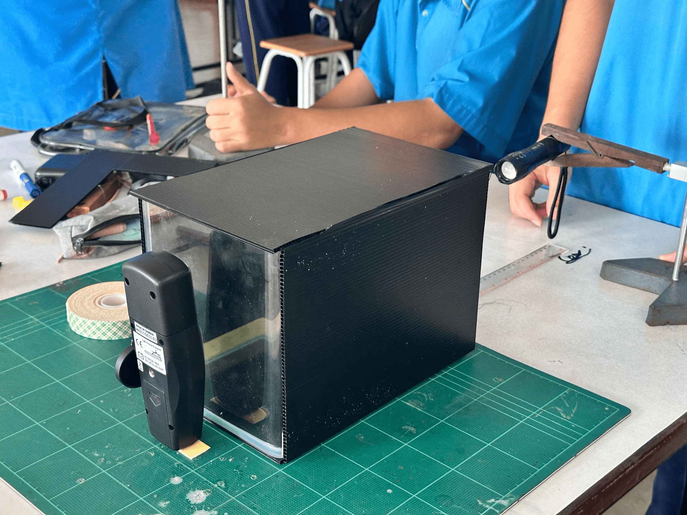

ในโลกของวิทยาศาสตร์ การศึกษาเกี่ยวกับพฤติกรรมของแสงและผลกระทบที่มีต่อมันเป็นเรื่องที่น่าสนใจและสำคัญอย่างยิ่ง หนึ่งในปัจจัยที่มีผลต่อความสว่างของแสงที่เรามองเห็นคือการมีอยู่ของละอองลอยในบรรยากาศ ซึ่งสามารถเกิดจากหลายแหล่ง เช่น ควันจากการเผาไหม้หรือฝุ่นละออง โครงงานวิทยาศาสตร์นี้มุ่งเน้นไปที่การทดลองเพื่อศึกษาและอธิบายผลของละอองลอยที่มีต่อความสว่างของแสง โดยการทดลองจะดำเนินการโดยการใช้เทคนิคการวัดความสว่างของแสงในสภาพแวดล้อมที่มีการปล่อยควันเข้าไปในอ่างที่มีแสงสว่าง โครงการนี้จะช่วยให้เราเข้าใจได้ลึกซึ้งถึงกลไกที่ทำให้แสงมีการเปลี่ยนแปลงไปตามปริมาณของละอองลอยที่มีอยู่ และยังช่วยเสริมความรู้เกี่ยวกับวิธีการวัดและการควบคุมสภาพแวดล้อมในการทดลอง การศึกษานี้จะนำไปสู่ความเข้าใจที่ดีขึ้นเกี่ยวกับการทำงานของแสงและผลกระทบของการมีละอองลอย ซึ่งเป็นข้อมูลที่มีค่าในการวิจัยด้านวิทยาศาสตร์และการประยุกต์ใช้งานในชีวิตประจำวัน
ทดลองและอธิบายผลของละอองลอยที่มีต่อความสว่างของแสง
1.1 ยึดกระบอกไฟฉายกับขาตั้งชุดที่ 1 และ ยึดลักซ์มิเตอร์กับขาตั้งชุดที่ 2
1.2 วางขาตั้งที่ยึดกระบอกไฟฉายและขาตั้งที่ยึดลักซ์มิเตอร์ไว้ด้านตรงข้ามกันของตู้ปลา ดังรูป
| รูปแบบการทดลอง | การทดลองครั้งที่ 1 (คลิกเพื่อดูวิดิโอ) | การทดลองครั้งที่ 2 (คลิกเพื่อดูวิดิโอ) | การทดลองครั้งที่ 3 (คลิกเพื่อดูวิดิโอ) | การทดลองครั้งที่ 4 (คลิกเพื่อดูวิดิโอ) | การทดลองครั้งที่ 5 (คลิกเพื่อดูวิดิโอ) | ค่าเฉลี่ย |
|---|---|---|---|---|---|---|
| ไม่มีควัน | 193.4 LUX | 160.7 LUX | 178.3 LUX | 159.7 LUX | 148.5 LUX | 168.1 LUX |
| มีควัน | 126.7 LUX | 52.4 LUX | 69.0 LUX | 127.1 LUX | 70.6 LUX | 89.16 LUX |
1.นายธนโชติ แก้วสิงห์ ม.6/2 เลขที่4
2.นายนพพล ศรีแก้ว ม.6/2 เลขที่5
3.นายจิรภัทร จันทรมณี ม.6/2 เลขที่6
4.นายรัฐภูมิ ธนาธิติวุฒิ ม.6/2 เลขที่7
5.นายยุทธกานต์ พลอยกระจ่าง ม.6/2 เลขที่8
6.นายณัฏฐพัชร พงษ์ธนานิกร ม.6/2 เลขที่10